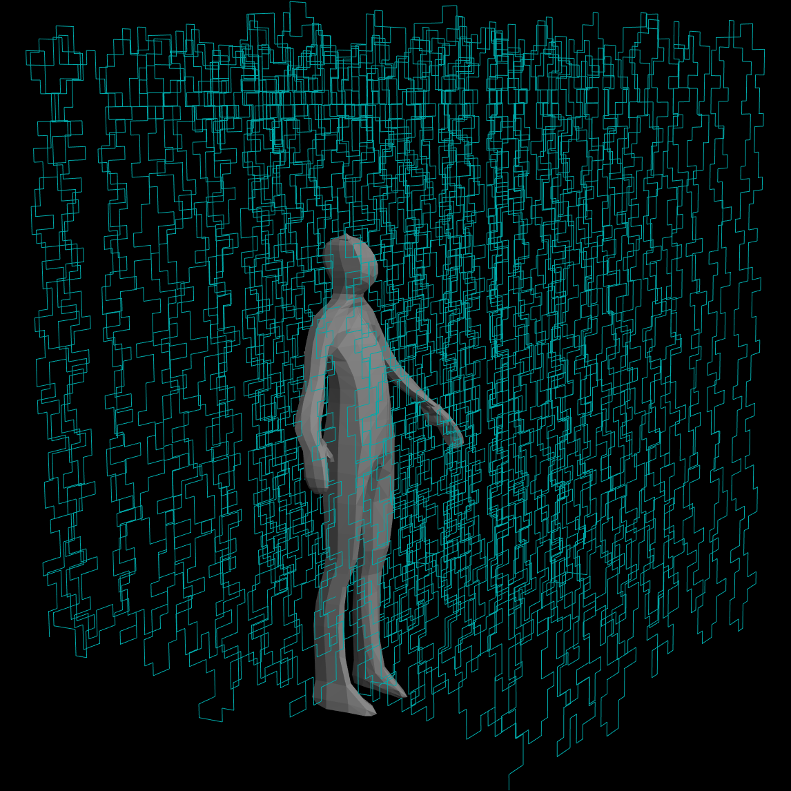

Hi! I’m AnneMarie, a grad student at RISD. I’m working on a project about experiencing math via art, and I want your help.
At this event, I’ll introduce you to the Kolakoski sequence and then have you fold wire in a Kolakoski-sequence-inspired pattern. I’ll take your folded wires — and trade you a zine for your efforts :) — and assemble them into a sculpture that will appear at the RISD Grad Thesis Show (May 21-30 at the RI Convention Center). If you fold a wire, then your name will be listed as a contributing artist!
Please join at any of the times listed on this RSVP form. (RSVPs aren't required, but it would be helpful for me to have an idea of how many people might attend.)
The event will take just 30 minutes, and you don’t need to bring anything except your hands.
Questions? atorre03@risd.edu
Info about me: AnneMarie
Info about Kolakoski: OEIS A000002
Info about RISD: Digital+Media
Info about the RISD Grad Show: May 21-30, 2026
